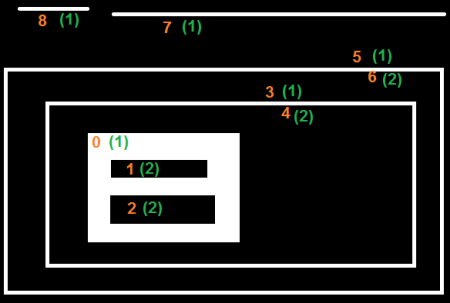

Contours Hierarchy
Goal
This time, we learn about the hierarchy of contours, i.e. the parent-child relationship in Contours.
Theory
In the last few articles on contours, we have worked with several functions related to contours provided by OpenCV. But when we found the contours in image using cv2.findContours() function, we have passed an argument, Contour Retrieval Mode. We usually passed cv2.RETR_LIST or cv2.RETR_TREE and it worked nice. But what does it actually mean ?
Also, in the output, we got three arrays, first is the image, second is our contours, and one more output which we named as hierarchy (Please checkout the codes in previous articles). But we never used this hierarchy anywhere. Then what is this hierarchy and what is it for ? What is its relationship with the previous mentioned function argument ?
That is what we are going to deal in this article.
What is Hierarchy?
Normally we use the cv2.findContours() function to detect objects in an image, right ? Sometimes objects are in different locations. But in some cases, some shapes are inside other shapes. Just like nested figures. In this case, we call outer one as parent and inner one as child. This way, contours in an image has some relationship to each other. And we can specify how one contour is connected to each other, like, is it child of some other contour, or is it a parent etc. Representation of this relationship is called the Hierarchy.
Consider an example image below :

In this image, there are a few shapes which I have numbered from 0-5. 2 and 2a denotes the external and internal contours of the outermost box.
Here, contours 0,1,2 are external or outermost. We can say, they are in hierarchy-0 or simply they are in same hierarchy level.
Next comes contour-2a. It can be considered as a child of contour-2 (or in opposite way, contour-2 is parent of contour-2a). So let it be in hierarchy-1. Similarly contour-3 is child of contour-2 and it comes in next hierarchy. Finally contours 4,5 are the children of contour-3a, and they come in the last hierarchy level. From the way I numbered the boxes, I would say contour-4 is the first child of contour-3a (It can be contour-5 also).
I mentioned these things to understand terms like same hierarchy level, external contour, child contour, parent contour, first child etc. Now let’s get into OpenCV.
Hierarchy Representation in OpenCV
So each contour has its own information regarding what hierarchy it is, who is its child, who is its parent etc. OpenCV represents it as an array of four values : [Next, Previous, First_Child, Parent]
*”Next denotes next contour at the same hierarchical level.”*
For eg, take contour-0 in our picture. Who is next contour in its same level ? It is contour-1. So simply put Next = 1. Similarly for Contour-1, next is contour-2. So Next = 2.
What about contour-2? There is no next contour in the same level. So simply, put Next = -1. What about contour-4? It is in same level with contour-5. So its next contour is contour-5, so Next = 5.
*”Previous denotes previous contour at the same hierarchical level.”*
It is same as above. Previous contour of contour-1 is contour-0 in the same level. Similarly for contour-2, it is contour-1. And for contour-0, there is no previous, so put it as -1.
*”First_Child denotes its first child contour.”*
There is no need of any explanation. For contour-2, child is contour-2a. So it gets the corresponding index value of contour-2a. What about contour-3a? It has two children. But we take only first child. And it is contour-4. So First_Child = 4 for contour-3a.
*”Parent denotes index of its parent contour.”*
It is just opposite of First_Child. Both for contour-4 and contour-5, parent contour is contour-3a. For contour-3a, it is contour-3 and so on.
If there is no child or parent, that field is taken as -1
So now we know about the hierarchy style used in OpenCV, we can check into Contour Retrieval Modes in OpenCV with the help of same image given above. ie what do flags like cv2.RETR_LIST, cv2.RETR_TREE, cv2.RETR_CCOMP, cv2.RETR_EXTERNAL etc mean?
Contour Retrieval Mode
1. RETR_LIST
This is the simplest of the four flags (from explanation point of view). It simply retrieves all the contours, but doesn’t create any parent-child relationship. Parents and kids are equal under this rule, and they are just contours. ie they all belongs to same hierarchy level.
So here, 3rd and 4th term in hierarchy array is always -1. But obviously, Next and Previous terms will have their corresponding values. Just check it yourself and verify it.
Below is the result I got, and each row is hierarchy details of corresponding contour. For eg, first row corresponds to contour 0. Next contour is contour 1. So Next = 1. There is no previous contour, so Previous = -1. And the remaining two, as told before, it is -1.
>>> hierarchy array([[[ 1, -1, -1, -1], [ 2, 0, -1, -1], [ 3, 1, -1, -1], [ 4, 2, -1, -1], [ 5, 3, -1, -1], [ 6, 4, -1, -1], [ 7, 5, -1, -1], [-1, 6, -1, -1]]])
This is the good choice to use in your code, if you are not using any hierarchy features.
2. RETR_EXTERNAL
If you use this flag, it returns only extreme outer flags. All child contours are left behind. We can say, under this law, Only the eldest in every family is taken care of. It doesn’t care about other members of the family :).
So, in our image, how many extreme outer contours are there? ie at hierarchy-0 level?. Only 3, ie contours 0,1,2, right? Now try to find the contours using this flag. Here also, values given to each element is same as above. Compare it with above result. Below is what I got :
>>> hierarchy array([[[ 1, -1, -1, -1], [ 2, 0, -1, -1], [-1, 1, -1, -1]]])
You can use this flag if you want to extract only the outer contours. It might be useful in some cases.
3. RETR_CCOMP
This flag retrieves all the contours and arranges them to a 2-level hierarchy. ie external contours of the object (ie its boundary) are placed in hierarchy-1. And the contours of holes inside object (if any) is placed in hierarchy-2. If any object inside it, its contour is placed again in hierarchy-1 only. And its hole in hierarchy-2 and so on.
Just consider the image of a “big white zero” on a black background. Outer circle of zero belongs to first hierarchy, and inner circle of zero belongs to second hierarchy.
We can explain it with a simple image. Here I have labelled the order of contours in red color and the hierarchy they belongs to, in green color (either 1 or 2). The order is same as the order OpenCV detects contours.
So consider first contour, ie contour-0. It is hierarchy-1. It has two holes, contours 1&2, and they belong to hierarchy-2. So for contour-0, Next contour in same hierarchy level is contour-3. And there is no previous one. And its first is child is contour-1 in hierarchy-2. It has no parent, because it is in hierarchy-1. So its hierarchy array is [3,-1,1,-1]
Now take contour-1. It is in hierarchy-2. Next one in same hierarchy (under the parenthood of contour-1) is contour-2. No previous one. No child, but parent is contour-0. So array is [2,-1,-1,0].
Similarly contour-2 : It is in hierarchy-2. There is not next contour in same hierarchy under contour-0. So no Next. Previous is contour-1. No child, parent is contour-0. So array is [-1,1,-1,0].
Contour - 3 : Next in hierarchy-1 is contour-5. Previous is contour-0. Child is contour-4 and no parent. So array is [5,0,4,-1].
Contour - 4 : It is in hierarchy 2 under contour-3 and it has no sibling. So no next, no previous, no child, parent is contour-3. So array is [-1,-1,-1,3].
Remaining you can fill up. This is the final answer I got:
>>> hierarchy array([[[ 3, -1, 1, -1], [ 2, -1, -1, 0], [-1, 1, -1, 0], [ 5, 0, 4, -1], [-1, -1, -1, 3], [ 7, 3, 6, -1], [-1, -1, -1, 5], [ 8, 5, -1, -1], [-1, 7, -1, -1]]])
4. RETR_TREE
And this is the final guy, Mr.Perfect. It retrieves all the contours and creates a full family hierarchy list. It even tells, who is the grandpa, father, son, grandson and even beyond… :).
For examle, I took above image, rewrite the code for cv2.RETR_TREE, reorder the contours as per the result given by OpenCV and analyze it. Again, red letters give the contour number and green letters give the hierarchy order.

Take contour-0 : It is in hierarchy-0. Next contour in same hierarchy is contour-7. No previous contours. Child is contour-1. And no parent. So array is [7,-1,1,-1].
Take contour-2 : It is in hierarchy-1. No contour in same level. No previous one. Child is contour-3. Parent is contour-1. So array is [-1,-1,3,1].
And remaining, try yourself. Below is the full answer:
>>> hierarchy array([[[ 7, -1, 1, -1], [-1, -1, 2, 0], [-1, -1, 3, 1], [-1, -1, 4, 2], [-1, -1, 5, 3], [ 6, -1, -1, 4], [-1, 5, -1, 4], [ 8, 0, -1, -1], [-1, 7, -1, -1]]])
Additional Resources
Exercises